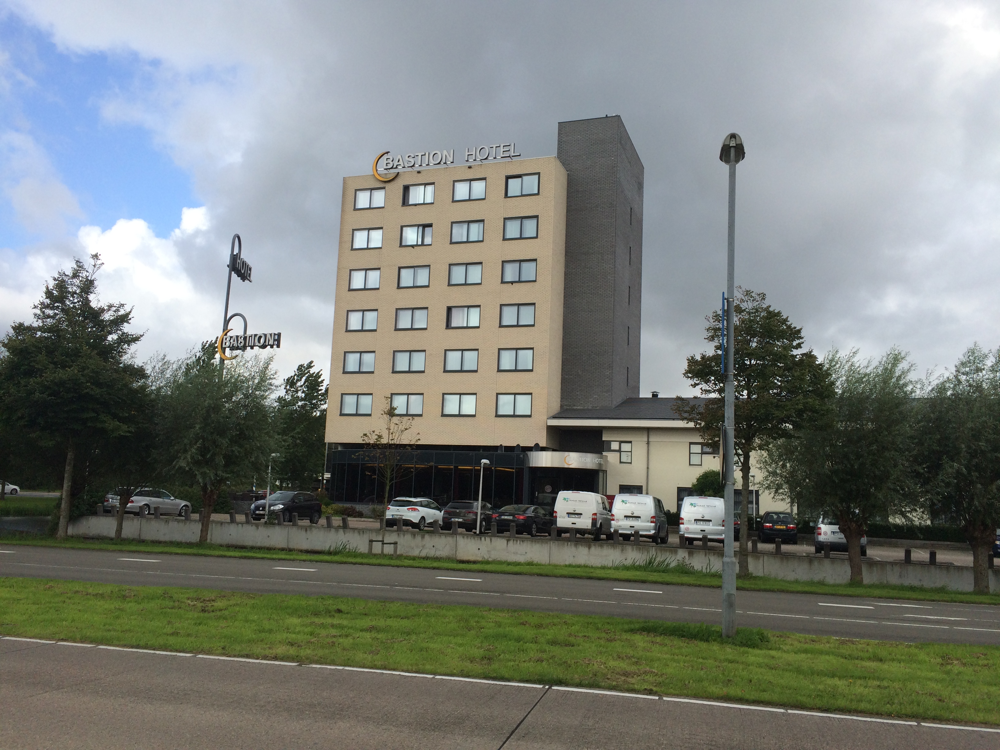
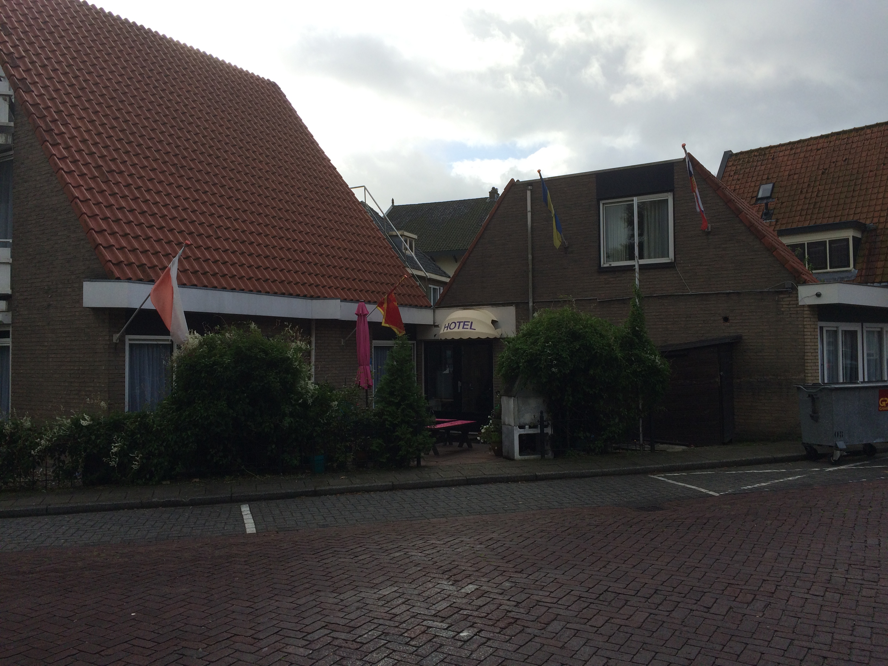
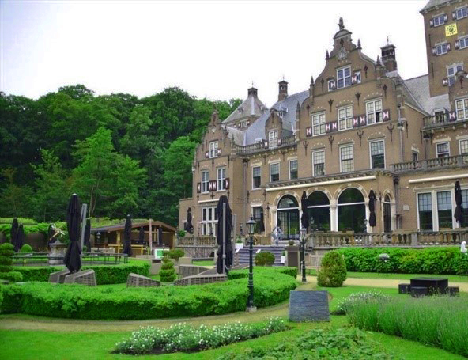

Slaapgelegenheid
In Santpoort-Noord zijn er veel verschillende slaapgelegenheden. Hieronder vindt u een duidelijk overzicht. Als u verdere informatie nodig heeft, klikt u op één van de onderstaande linkjes.
Bastion Hotel
Het Bastion Hotel is gelegen aan de Vlietweg 20 in Santpoort-Noord. Het is een drie sterren hotel en beschikt over 87 kamers. De goedkoopste kamer kunt u al boeken vanaf €65,- per nacht. Het Bastion hotel is gunstig gesitueerd vlak naast de A208.
Hotel de Weyman
Hotel de Weyman is een uitstekend drie sterren hotel. Het is gelegen in het hartje van Santpoort-Noord. Je kunt al een kamer boeken vanaf €59,- per nacht.
Landgoed Duin en Kruidberg
Op het landgoed Duin en Kruidberg staat een prachtig vier sterren hotel. Dit classiek historisch landhuis met zijn sfeervolle Engelse landgoedtuin staat in de omgeving van het nationaal park Zuid-Kennermerland. Door de diversiteit aan kamers, van klassiek tot modern, zit er voor iedereen wat bij. Met recht een bijzondere plek. Tevens aan deze locatie verbonden de eetgelegenheden: de Vrienden van Jacob en de brasserie DenK.